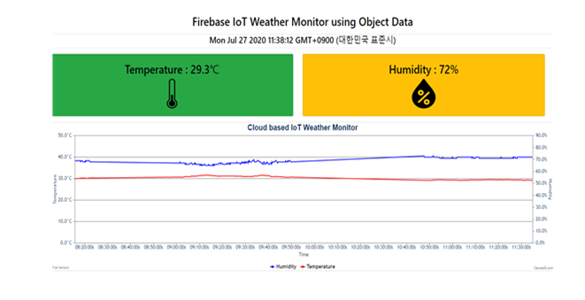
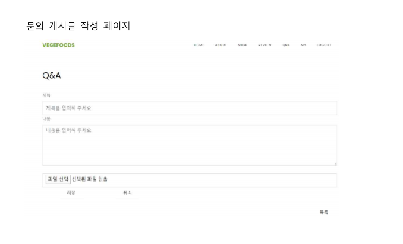
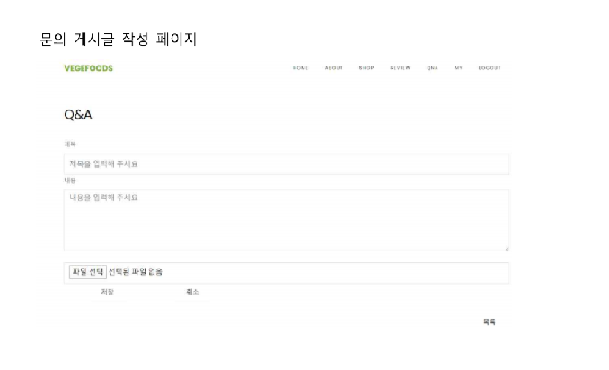
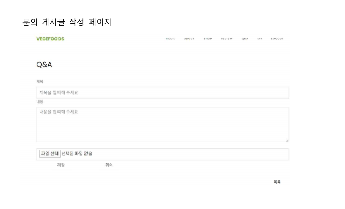

 


C언어
- 2019.06 ~ 2019.06.24
- 단일 연결리스트를 이용한 개인정보관리 프로그램
사물인터넷
- 2019.06 ~2019.06.21
- 아두이노 및 키패드, 서보모터를 활용한 문열림장치 제작
- 2019.11 ~2019.12.23
데이터베이스
- 2019.11 ~2019.12.23
- 봉사센터관리 프로그램 데이터베이스 설계 및 구축
Java
- 2019.11 ~2019.12.20
- Swing을 활용한 GUI음식주문관리 프로그램
Client Side Programming
- 2019.12 ~2019.12.24
- 탁구게임 구현
클라우드 컴퓨팅 실습
- 2020.06~2020.7.27
- NodeMCU 와 Firebase를 이용한 클라우드 기반 IoT 응용 서비스 개발(IoT 원격 LED 제어, 실시간 IoT 온습도 측정 시스템 제작)
시스템 분석 및 설계
- 2020.03~2020.07.17
- 구인구직 관리시스템
시스템 분석 및 설계 프로젝트
- 2020.03~2020.07.17
- 구인구직 관리시스템